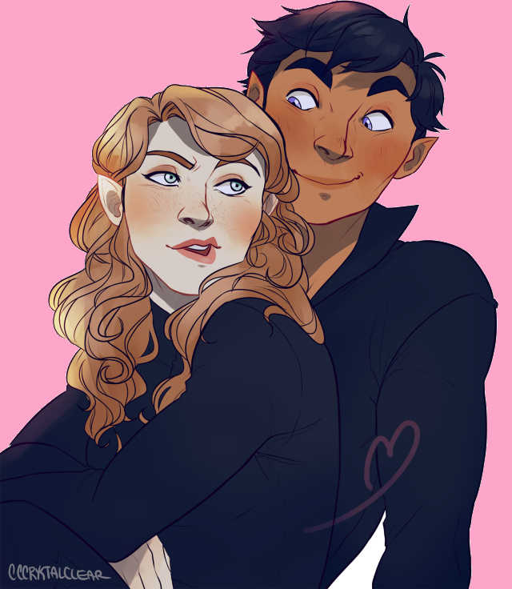
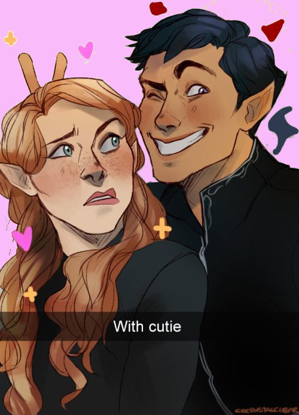
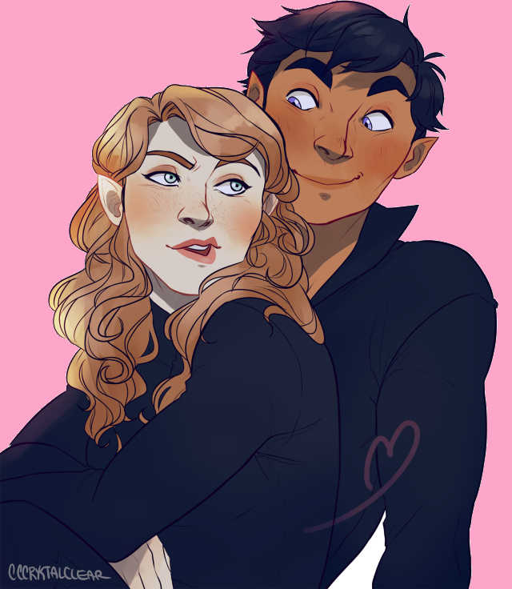
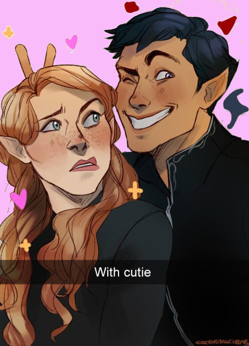

ASS: Cristofer Giovanini
FELIZ DIA DOS NAMORADOS AMOR
Oi amor, Hoje é um dia especial, o Dia dos Namorados, e eu não poderia deixar passar em branco sem te dizer o quanto você é importante para mim. Desde que você entrou na minha vida, tudo mudou para melhor. Você trouxe uma luz especial que ilumina meus dias e me faz sorrir como ninguém mais. Você é meu porto seguro, aquele que eu posso contar em todos os momentos, sejam eles de alegria ou dificuldade. Cada dia ao seu lado é um presente. Juntos, construímos memórias incríveis e compartilhamos momentos cheios de risadas e emoções. Sua bondade, carinho e apoio são verdadeiros tesouros que guardo no coração. Você é muito mais do que minha namorada, é minha melhor amiga. Com você, posso ser eu mesmo, sem medo de ser julgado. Nossa conexão é única, e me sinto abençoado por tê-la ao meu lado. Hoje, nesse Dia dos Namorados, quero te lembrar o quanto sou grato por você. Você me inspira a ser uma pessoa melhor, a correr atrás dos meus sonhos e enfrentar os desafios com coragem. Prometo te cuidar e proteger nosso amor com todo o meu coração. Quero construir um futuro incrível ao seu lado, compartilhando sorrisos, abraços e beijos apaixonados. Mal posso esperar para viver todas as fases da vida ao seu lado, enfrentando tudo juntos. Feliz Dia dos Namorados, meu amor! Que possamos celebrar nosso amor todos os dias e valorizar cada momento que temos juntos. Te amo mais do que as palavras podem expressar. Com todo o meu carinho.
Ass:Cristofer Giovanini